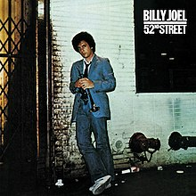
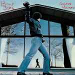

Number 2

Released in 1978, 52cnd Street was Joel's next album after The Stranger
and while it couldn't beat the perfection of Stranger, it delivered a
track list full of new and unique bangers such as "Zanzibar", "Honesty",
and "Big Shot".While the track list on this album isnt quite as strong
as The Stranger, I would argue that there isnt a single song on this
album that can be considered bad or bland
Billy Joel talks about 52cnd Street
Track List
- Big Shot
- Honesty
- My Life
- Zanzibar
- Stiletto
- Rosalinda's Eyes
- Half a Mile Away
- Until the Night
- 52cnd Street
Number 3

While Glass Houses contains many of Joel's lesser known songs it is
still easily one of his best. This album truly shows Joel's love of
exploring different musical styles. On one hand this album contains rock
hits such as "You May Be Right" and "All For Leyna". However, it also
contains songs such as "Through the Long Night" and "Don't Ask Me Why"
which are reminiscent of earlier Billy Joel works. Overall this album
can be outshined by The Stranger or 52cnd Street, but it is still a
fantastic album
Billy Joel talks about Glass Houses
Track List
- You May Be Right
- Sometimes a Fantasy
- Don't Ask Me Why
- It's Still Rock and Roll to Me
- All For Leyna
- I Don't Want to Be Alone
- Sleeping With the Television On
- C'etait toi/You Were the One
- Close to the Borderline
- Through the Long Night